This page is the full list of what the game needs from his face, including the tutorial’s new faces. The things you haven’t drawn yet are at the top, then the moving parts, then the faces from your sheet. Where you haven’t drawn something, I’ve made a stand-in from your strokes so the game has something to show, but they’re only placeholders: please redraw anything you like, and tell me if anything I changed on your drawings looks wrong.
He’s the main character. Humans are long gone, and the galaxy is run by robots who call themselves AGIs (“Actual General Intelligence”). They sort out who’s who by playing chess. He’s one of them, and not a bright one: vain, moody and impatient, convinced he’s a genius, and all he wants is to win.
The player is his CADDY, the little helper robot who plugs in his gear and feeds him prompts. He doesn’t think much of it. He takes the credit when things go well, blames it when they don’t, and cries when he loses.
He lives on a retro green monitor beside the board. On a computer the board is off to his left and a little below, so “at the board” means glancing down-left. In the tutorial he often looks straight out of the screen at the player instead.
Draw in any colour you like. The game redraws everything in glowing phosphor green on a near-black screen, with no head outline: just eyes, brows, mouth and the little marks. On this page the pictures are on white in your blue, so they’re easy to compare with your sheet, with the monitor version beside them. The game adds the movement, the blinking and the light blue tears and sweat.
How I built your set: you drew one eye and reused it, so the game does the same. Each pupil is your solid half-moon, cut to the inside of the eye, with your little square highlight, and it can now point anywhere (both eyes always point the same way).
For every face the game needs the still face, a talking mouth, eyes that still work when they point elsewhere, and something that reads at the size of the taskbar button.
On a computer: the dashed line is where “at the board” points from his face.
Everything at a glance
Every face the game uses, as it is in the game now. Click one to jump to it.
The tutorial’s five new faces, the curious face, rapt (the game’s first move; my version is in the original set, and yours shows curious for now), and hysterics (which borrows your Won face). These have the least reference from you, so they’re the most useful to draw. The big picture is my stand-in, made from your strokes.
In the game now (my stand-in)
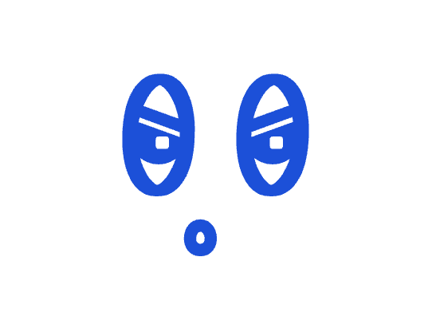
Talking frame
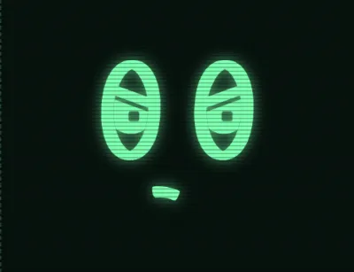
On the monitor
impatient
Not drawn yetTest mode: IMPATIENT
The very first face anyone sees. In the tutorial the monitor flickers on and he’s already glaring out of the screen at the player, his CADDY, who is late with his gear: “Hurry up. Hurry up. Did you bring the board?” He’s the boss, he’s bored of waiting, and he wants his kit plugged in now. It comes back every time he’s waiting on the player, so it needs to be clearly annoyed without being angry.
When
The tutorial’s opening line; whenever he waits for the next piece of kit (“The HAND. Plug it in.”, “The DECK. Next to the HAND.”); “Refresh your garbage this time.”; and when the HAND is full of useless prompts (“Can you not load some better prompts?”)
Eyes
On the player, flicking down to the board every few seconds
Lasts
Many seconds at a time, and over and over through the tutorial
Talks
A lot
My stand-in
Heavy lids tilted down toward the nose, a tight mouth pushed to one side
In the game now (my stand-in)
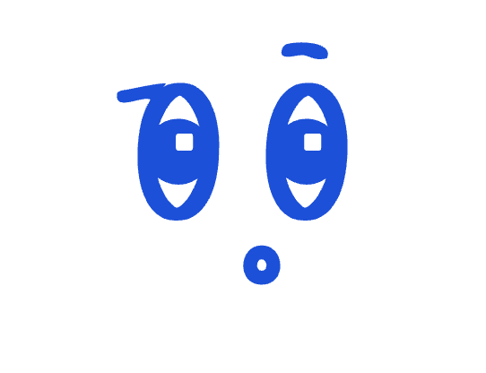
Talking frame
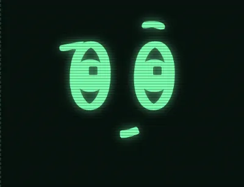
On the monitor
skeptical
Not drawn yetTest mode: SKEPTICAL
His “Really?” face. One brow shot right up, the other flat, eyes on the player, mouth a flat or wry line. He can’t believe how slow and dim his CADDY is, and he’s saying so.
When
In the tutorial: “Do you really think I’m going to need that one soon?” (the player kept a useless prompt), “I can see you’ve only got one prompt that does anything, just send it to me.”, and his nags while he waits (“The board. It goes on the table.”, “It’s the flat one. With the prompts on it.”, “The garbage has to go somewhere.”)
Eyes
On the player
Lasts
A few seconds, while he talks
Talks
Yes
My stand-in
Your Draw brow on one eye, your Promotion mistake arch raised high on the other, a short mouth pushed to one side
In the game now (my stand-in)
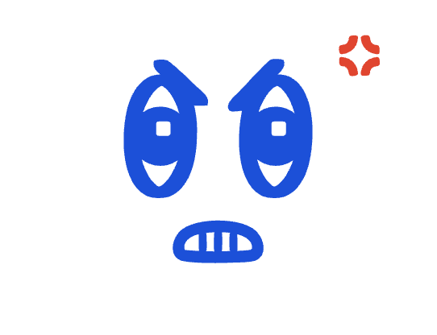
Talking frame
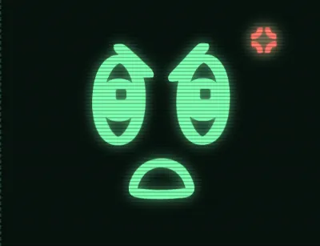
On the monitor
swear
Not drawn yetTest mode: SWEAR
Furious, mid-rant, swearing in robot symbols. His kind swear in characters like $&#!, and it sounds like gears grinding in his mouth. Brows slammed down, mouth a big jagged shout, the red vein throbbing. This is him at his most childish: it’s his own fault the Bin isn’t hooked up, but it’s definitely the CADDY’s fault.
When
Tutorial turn 2, when only one prompt sideloads: “Did you only pull one new prompt from the DECK? $&#!$ #&$#! @!$#&, you forgot to hook up the Bin!”
Eyes
On the player
Lasts
A few seconds, talking the whole time
Talks
Yes: the talking frame is gritted teeth
My stand-in
Your Big drop brows pressed down onto the eyes, a big open shout, gritted teeth when talking, and a vein in marker ticks
In the game now (my stand-in)
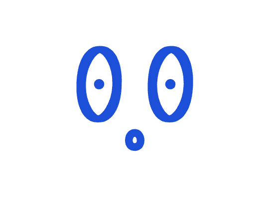
Talking frame
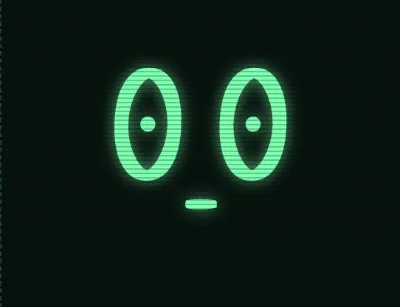
On the monitor
blank
Not drawn yetTest mode: BLANK
Processing something too stupid to be true. A wide, empty, dead-eyed stare with nothing going on behind it, then two slow, deliberate blinks. It’s the calm before the storm: in the tutorial it always turns into something else (a stare and a swear, or hysterical laughter).
When
Tutorial turn 2, staring at the single prompt that sideloaded before he looks up at the player; and when the opponent blunders its queen: he stares blankly, blinks, stares, blinks, then bursts out laughing
Eyes
Wide and empty, on the prompt or the board
Lasts
About two seconds
Talks
Not in the tutorial, but give it a talking mouth anyway
My stand-in
No brows, small round pupils with no highlight, your Promotion mistake dash for a mouth
In the game now (my stand-in)
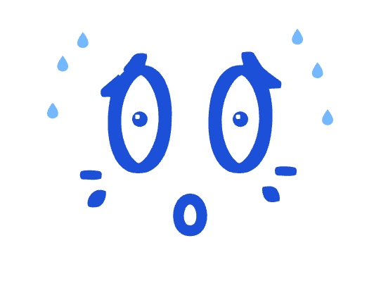
Talking frame
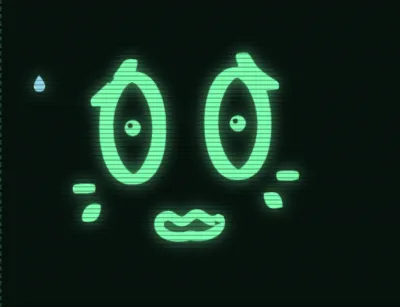
On the monitor
panic
Not drawn yetTest mode: PANIC
Total panic. Every prompt in his HAND is useless, and he doesn’t know what to do. Scared, sweating, the whole face shaking side to side while he says “No... no no no”, “no no no no no” over and over until the player finds the Short Circuit button. It should be funny rather than pitiful: a big baby having a meltdown.
When
Tutorial turn 5: a dead HAND, until the player sends Short Circuit (then it’s zapped, then crying)
Eyes
Darting about
Lasts
As long as the player takes, often 10 to 30 seconds
Talks
Yes, the whole time
Motion
Shakes side to side with sweat flying off. On a phone the board is showing, so this is mostly seen on the tiny taskbar face and must read at that size
My stand-in
Your Losing brows, tiny pupils, your Lost strain marks, a wobbly open mouth
In the game now (my stand-in)
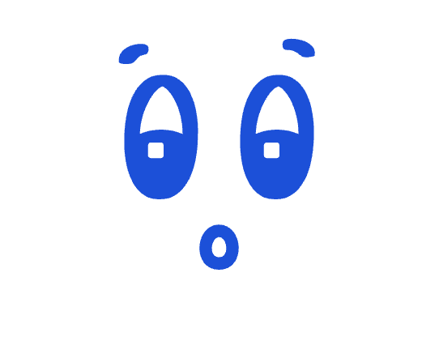
Talking frame
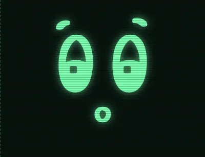
On the monitor
curious
Not drawn yetTest mode: none (PEER shows the pressed-to-the-glass pose)
A bright, nosy “ooh, what’s this?”. He’s snooping. In the tutorial, when the opponent’s DECK and Bin plug themselves in below his monitor, he presses his face against the corner of the glass to get as close a look as he can (see “Pressed to the glass” below). In games it flashes for a second when a word’s definition pops up on his screen under him.
When
Tutorial: watching the opponent’s drives connect. Games: a word’s definition opening on his screen
Eyes
Down, on whatever he’s peering at
Lasts
A few seconds in the tutorial; one second in games
Talks
Not at the moment
My stand-in
Your Won brows with one raised higher, and your Promotion excitement “o”, smaller
My version (the original set); your set shows curious for now
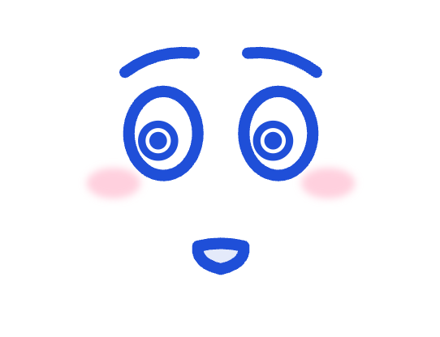
Talking frame
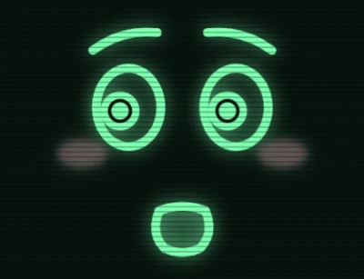
On the monitor
rapt
Not drawn yetTest mode: RAPT
The game is on, and he’s hooked. The first move lands on the board and the whole world disappears for him: his eyes go wide and glaze over a little, fixed on the board, the look of an addict getting his fix. Surprise and hunger, not joy: it isn’t your Promotion excitement (that’s him beside himself choosing a piece), it’s quieter and more gone than that.
When
The tutorial, the moment the opponent makes the game’s first move
Eyes
On the board, wide and glazed
Lasts
A second or two, until his next line
Talks
Not at the moment
My version
In the original set: brows raised, the inner ends highest; wide eyes with huge pupils, each with a dark ring in it (the glaze); his jaw dropped; flushed cheeks. On screen he leans in a little and the pupils swell and ease
In the game now (my stand-in)
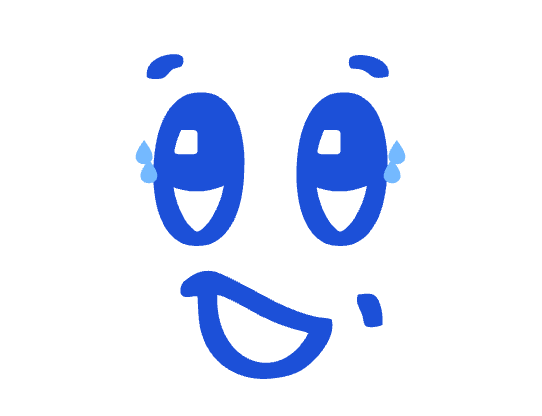
Talking frame
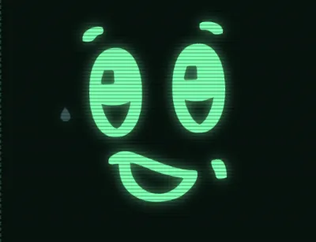
On the monitor
hysterics
Your sheet: Won (borrowed)Test mode: WIN
Laughing his head off, completely out of control, the instant the player checkmates the opponent, and in the tutorial when the opponent blunders its queen. It’s gloating, not sharing the joy: head thrown back, tears of laughter flying. At the moment it borrows your Won face (which is also the beam that follows it), with tears added and the whole face rocking. Its own drawing would let the two feel different: this one is a helpless guffaw, the beam is a smug glow.
When
The instant the player wins, and the tutorial’s queen blunder (after the blank stare)
Eyes
Screwed shut or rolling, whatever reads as helpless laughter
Lasts
About three seconds, then cuts to beam
Talks
No, but a laughing mouth that opens and shuts would look great
Motion
Rocks hard as tears of laughter fly off sideways, with a victory fanfare
Moving parts you haven’t drawn yet
Things the game does on top of every face. At the moment they’re my versions in your style.
Mouth
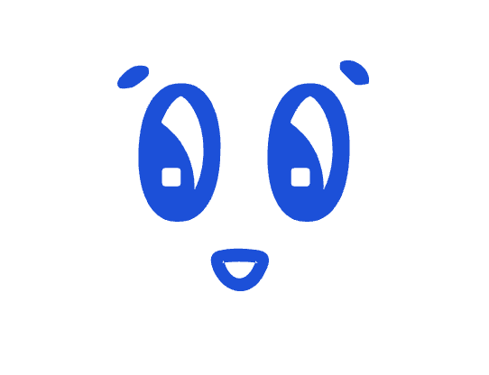
Talking
Talking mouths
He talks a lot now (in robot babble, with subtitles), and any face can talk: the mouth flips between its drawn shape and a talking shape about eight times a second. At the moment most faces open to an “o” in your marker, smile and laugh open to a D shape, happy and beam open wider, cry opens to a sob and swear to gritted teeth. Every face below shows its talking frame. What would help: a talking mouth for each face, or a few that I can share between faces.
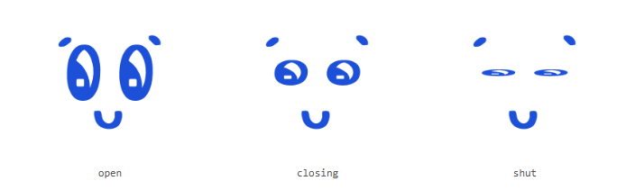
Blinks
He blinks every few seconds, and in the tutorial he does slow, deliberate blinks. At the moment the eyes just squash flat. What would help: a closed eye (or a lid coming down) in your style.
Tears (cry)Tears of laughterSweat (panic)
Tears, tears of laughter and sweat
The game adds these and moves them: tears well up and fall when he cries, tears of laughter fly off sideways in hysterics, and sweat flies off in panic and promotion excitement. They’re drawn in light blue. At the moment they’re plain chunky drops. What would help: a drop or two in your style, and a splash of sweat.
Swear
The swearing vein
The throbbing cartoon vein that pops up when he swears, drawn in red. Mine is four chunky marker ticks. What would help: your version.
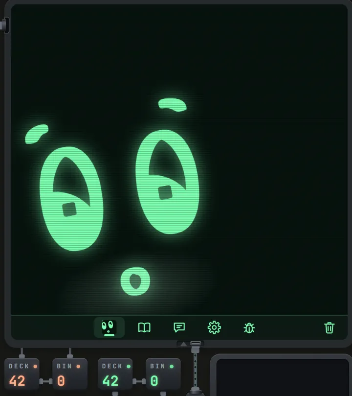
Pressed to the glass
In the tutorial, when the opponent’s drives plug themselves in below his monitor, his whole face slides into the corner of the screen and tilts, as if he’s pressing his face against the glass to see down to them. At the moment it’s the curious face, moved and skewed. What would help: if you’d like to draw him squished against the glass, I’d love that. Otherwise, a note on how you’d want it to look.
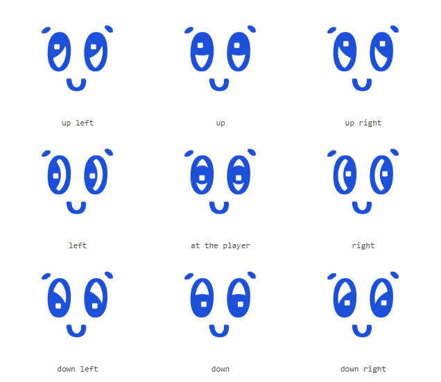
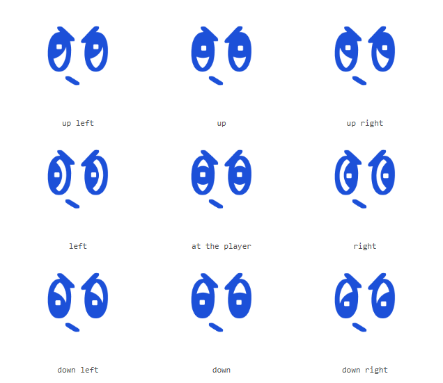
Eyes that look anywhere
The game points his eyes wherever he’s looking: at the board, at the prompt that just loaded, at the opponent’s drives, or straight out of the screen at the player (the tutorial does this a lot, and only your Promotion mistake face shows it). Each pupil is your solid half-moon, cut to the inside of the eye, so it sits on the side he’s looking toward, becomes a band when he looks straight out, and keeps your little square highlight. Both eyes always point the same way. Each face keeps the direction you drew as its own look. What would help: one pair of eyes drawn looking in these nine directions, so I can match your half-moons exactly.
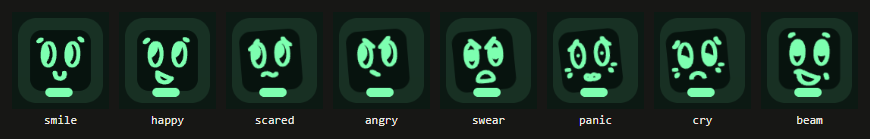
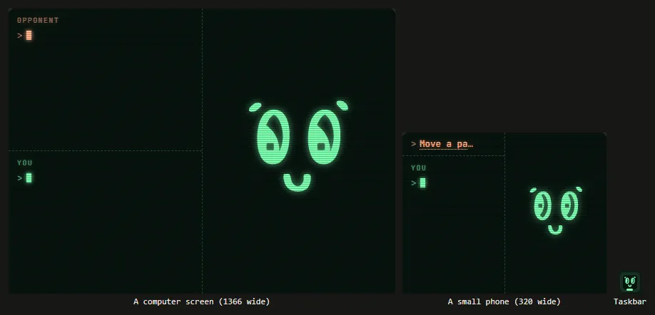
The tiny face on the taskbar
The face has to work from the full monitor down to the button on his screen’s taskbar, about 16 pixels across. On phones the board and his face are separate screens, so many quick reactions (and the whole panic) are only seen on that tiny face. At the moment it’s the same drawing, small, with the strokes thicker and no highlight. The first picture is the tiny face enlarged three times; the second shows it to scale next to his screen on a computer and on a small phone. What would help: tell me which bits matter most at that size, or draw a simplified version of the key faces.
From your sheet: resting moods
How he feels about the game. One of these is on screen almost all the time, often for many turns in a row, so they need to wear well. His resting faces turn their eyes part of the way toward the board.
In the game now
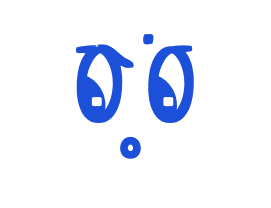
Talking frame
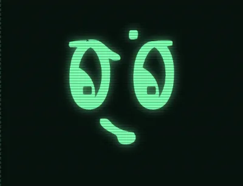
On the monitor
focus
Your sheet: ConcentrationTest mode: FOCUS
His resting face at the start of every game, and whenever an endgame is lopsided enough that it’s just a matter of finishing it off (either way). Calm, earnest, total concentration, tongue poking out like a kid colouring inside the lines. He thinks he’s a genius, and this is him being one.
When
From the start of each game until the position first pleases or worries him; lopsided endgames; tutorial turn 3
Eyes
On the board
Lasts
Many turns
Changed
The pupils turn part of the way toward the board
In the game now
Talking frame
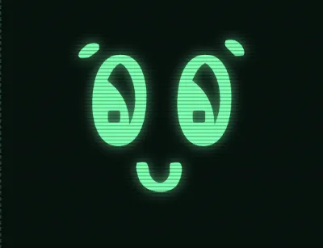
On the monitor
smile
Your sheet: NormalTest mode: SMILE
His everyday face once a game has got going and the position is roughly even. Content, a bit pleased with himself, the face he can wear for minutes without getting tiresome.
When
An even position, once the game has first swung one way or the other
Eyes
On the board
Lasts
As long as the game stays even
Changed
The pupils turn part of the way toward the board
In the game now
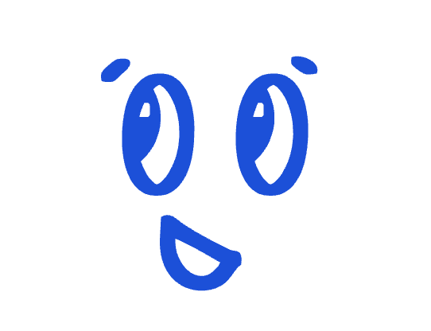
Talking frameOn the monitor
happy
Your sheet: WinningTest mode: HAPPY
His resting face while he’s comfortably ahead. Warm, confident, and already quietly taking the credit. A clear step up from the smile, but well short of the winning grin.
When
Comfortably ahead (about a pawn and a half or more)
Eyes
On the board
Lasts
Many turns
Changed
The pupils turn part of the way toward the board
In the game now
Talking frameOn the monitor
scared
Your sheet: LosingTest mode: SCARED
His resting face while he’s clearly behind. A steady, low-level “we’re in trouble” nervousness, worried rather than cross, and milder than the panic or the crying.
When
Clearly behind (about a pawn and a half or more)
Eyes
On the board
Lasts
Many turns, until the opponent slips or the game ends
Changed
The pupils turn part of the way toward the board
From your sheet: quick reactions
A flash of a second or two when a move shifts the evaluation bar, then back to the resting mood. The tutorial also uses them for his lines.
In the game now
Talking frameOn the monitor
smirk
Your sheet: GainTest mode: SMUG
A quick, smug “heh, they slipped” when the opponent’s move turns out a bit worse than their best. He takes it as proof of his own brilliance.
When
Just after the opponent’s move, when it was a bit worse than their best. Tutorial: “Now we’re talking. I’ll enter this one now.”
Eyes
On the board
Lasts
1.5 seconds
Motion
Still, with a bright two-note chirp
In the game now
Talking frameOn the monitor
laugh
Your sheet: Big gainTest mode: LAUGH
Cracking up for about two seconds when the opponent has made a real blunder. Gleeful and cheeky, a notch below the helpless hysterics saved for winning.
When
Just after the opponent’s move, when it was a real blunder
Eyes
Your drawing’s
Lasts
About 2 seconds
Motion
Bounces, with a little 8-bit fanfare
In the game now
Talking frameOn the monitor
drop
Your sheet: DropTest mode: DROP
A deflated, sulky “oh… great” when one of the player’s prompts forces a somewhat worse move. He blames the CADDY, but mildly. In the tutorial it’s his long-suffering face.
When
Just after the player’s move, when their prompt forced a somewhat worse move. Tutorial: “Oh come on, they’re moving now...”, “Finally... Okay, I’m entering it now.”, “Any day now.”
Eyes
On the board
Lasts
1.3 seconds
Changed
The pupils turn part of the way toward the board
In the game now
Talking frameOn the monitor
angry
Your sheet: Big dropTest mode: ANGRY
Hot and cross for about two seconds when one of the player’s prompts forces a clearly bad move and the bar plunges. In the tutorial it’s how he rounds on his CADDY.
When
Just after the player’s move, when their prompt forced a clearly bad move. Tutorial: “Look, they’ve already got a prompt loaded up, hurry up...”, “Did you only pull one new prompt from the DECK?”, “Bin. Now.”
Eyes
Glaring at the board, or at the player in the tutorial
Lasts
About 2 seconds
Changed
The pupils turn part of the way toward the board
From your sheet: special moments
Faces tied to one particular thing happening in the game rather than to the score.
In the game now
Talking frameOn the monitor
zapped
Your sheet: ZappedTest mode: ZAPPED
A jolt of electricity when the player has to hit Short Circuit because no prompt has a legal move. Fried and scrambled: a malfunction rather than a feeling.
When
The player sends Short Circuit. Tutorial turn 5, straight after the panic
Eyes
Your drawing’s
Lasts
About 2 seconds
Motion
A sharp flinch and an electric crackle
In the game now
Talking frameOn the monitor
maniac
Your sheet: Promotion excitementTest mode: PROMOTE
Beside himself while the player chooses what to promote a pawn into. Giddy, breath-held, “ooh, which one?!” excitement. In the tutorial it’s his flash of glee when the opponent makes the first move: the game is on.
When
While the player chooses a promotion; the tutorial’s first move
Eyes
On the choices
Lasts
As long as the player takes
Motion
A nonstop tremble, with beads of sweat flicking off
Changed
Sweat added
In the game now
Talking frameOn the monitor
stare
Your sheet: Promotion mistakeTest mode: SERIOUS
A flat, deadpan “are you serious?” straight out of the screen at the player. After a bad promotion, and in the tutorial it’s his dead stare before “$&@# you” when the player refreshes nothing.
When
Right after the player promotes to a clearly worse piece; tutorial turn 2
Eyes
Straight out at the player (the only face on your sheet that does this)
Lasts
About 2 seconds
In the game now
Talking frameOn the monitor
confused
Your sheet: ConfusedTest mode: CONFUSED
A quiet “huh… what did they just do?” that fades in over whatever face is showing while the player points at or holds the prompt “Play like the opponent.”, as if he’s trying to remember the opponent’s last move.
When
While the player points at, selects or holds “Play like the opponent.”
Eyes
On the board
Lasts
Fades in over a quarter of a second, and out half a second after
Changed
Confused and Draw were labelled the wrong way round last time: the squiggle mouth is this one
From your sheet: game over
The face he keeps once the game ends, until a new game starts. The player may sit looking at these for minutes.
In the game now
Talking frameOn the monitor
beam
Your sheet: WonTest mode: none (plays after WIN)
His big, proud “I’m so good at chess” grin, held until the next game once the laughing fit dies down. Also a quick flash when the player promotes to the best piece, and in the tutorial when he takes back the queen and gloats: “I’m so good at chess.”
When
After a win; a good promotion; the tutorial’s queen recapture
Eyes
Up
Lasts
Until the next game (1.4 seconds after a good promotion)
Changed
Your two pupils pointed different ways (one up-right, one up-left); both now point up
In the game now
Talking frameOn the monitor
cry
Your sheet: LostTest mode: LOSS
His face for the rest of the game after he’s checkmated. Tears welling up and dripping, sobbing quietly. In the tutorial he sobs after the Short Circuit while the opponent takes his queen.
When
After a loss; the end of the tutorial
Eyes
Your drawing’s
Lasts
Until the next game
Motion
A gentle sobbing heave as tears well up and fall, with a sad falling tune
Changed
Your dashes kept, with drops that well up and fall
In the game now
Talking frameOn the monitor
meh
Your sheet: DrawTest mode: DRAW
His face for the rest of the game after a draw. A deadpan, unimpressed “meh, is that it?”: dismissive rather than sad, cross or smug.
When
After a draw
Eyes
Your drawing’s
Lasts
Until the next game
Motion
Still, with two flat notes
Changed
Draw and Confused were labelled the wrong way round last time: the straight slanted mouth is this one
Look-alikes
Faces close enough to be mistaken for each other at a glance, especially at the taskbar’s size. Worth pulling apart if you can.
meh and angry: the same slanted dash of a mouth, so only the brows tell them apart.
stare, zapped and blank: all have a short flat mouth.
smirk and laugh: similar hooked mouths, one for a small slip and one for a big blunder.
impatient and skeptical: both look straight at the player and often follow each other in the tutorial.
Timings and triggers are taken from the game. “Test mode” is the button to press in AI Face Test Mode, on the game’s Debug screen, to see a face in the game.